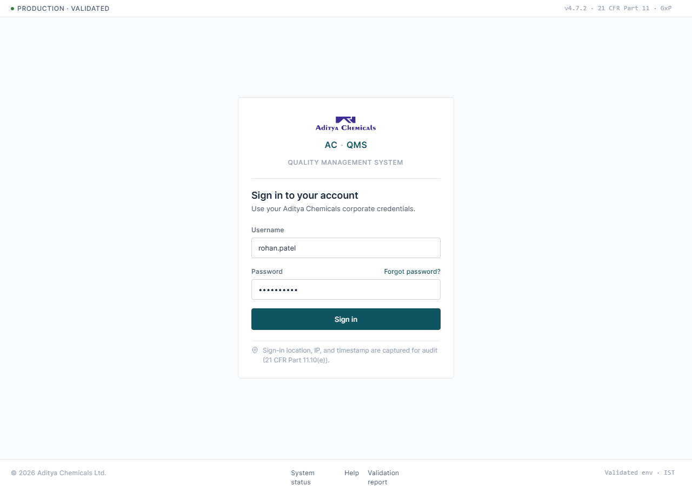
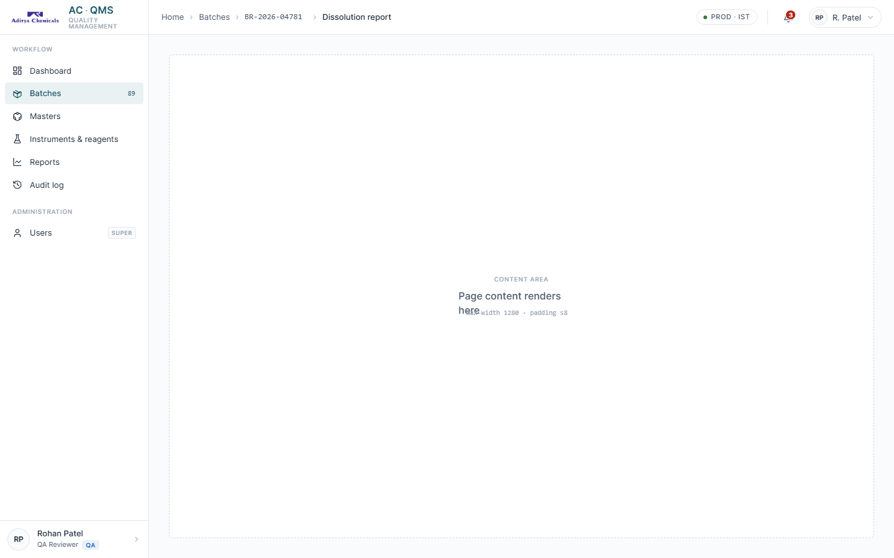
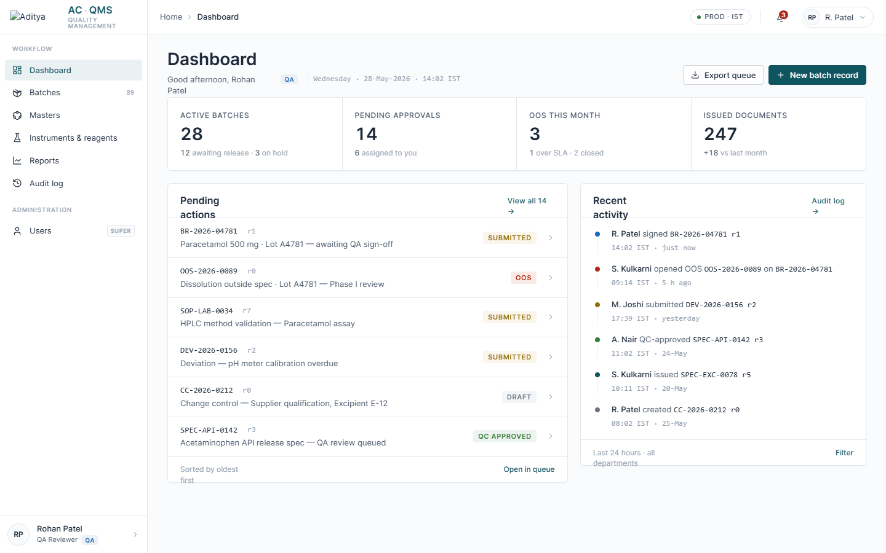
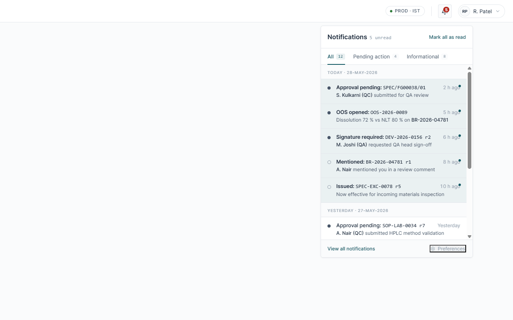
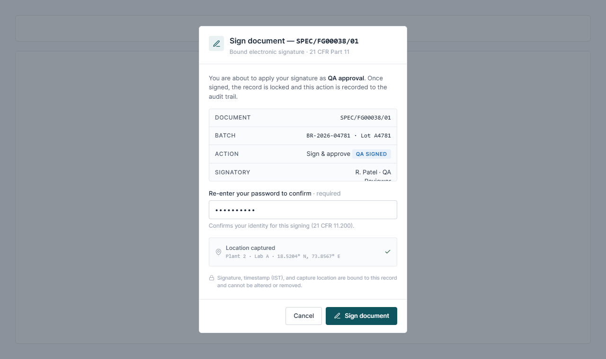
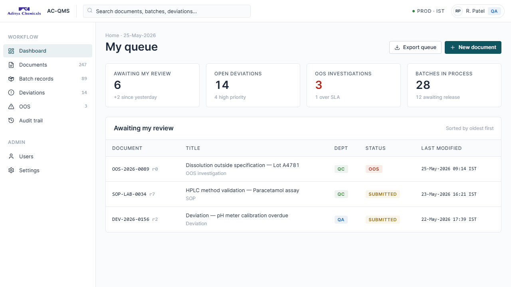

The visual and interaction language for Aditya Chemicals' regulated Quality
Management System. Overwhelmingly white and neutral; color is functional only —
it signals department, document status, or out-of-specification danger. Built
for the restraint of a lab instrument readout: precise, calm, inspection-ready.
Version
1.0
Issued
29-May-2026
Typeface
Inter · JetBrains Mono
Compliance
21 CFR Part 11 · GxP
Scope
Foundations · Components · UI kit
AC·QMS/Foundations01 · Color
Foundations
Color is functional only
Color never decorates. It signals one of three things — department, document status, or out-of-specification danger. One accent (teal) drives primary actions; everything else lives in neutrals.
Brand accent primary actions & active nav · max one per view
Primary
--primary
#0F5560
Primary hover
--primary-hover
#0A434C
Primary soft
--primary-soft
#EAF1F2
Departments the only standing identity colors · badge only
QC
QC green
--qc · --qc-soft
QA
QA blue
--qa · --qa-soft
OOS — the one strong color danger / destructive only
--oos #B42318 is reserved exclusively for Out-Of-Specification results and destructive warnings. It must never appear otherwise.
Status pills soft tint background · solid colored text
DraftSubmittedQC approvedQA signedIssuedOOS
Neutrals the real palette — everything sits here
Surface
#FFFFFF
Canvas
#FAFBFC
Border
#E4E7EC
Strong
#D0D5DD
Muted
#98A2B3
Secondary
#475467
Text
#1D2939
Aditya Chemicals · Quality Management SystemFunctional color only · no gradients
AC·QMS/Foundations02 · Typography
Foundations
One neutral family, compact scale
Inter throughout, base 14px. Hierarchy comes from weight and spacing — not color or large size jumps. Tabular numerals wherever numbers stack; monospace for document IDs and timestamps.
Inter UI family · weights 400 / 500 / 600 / 700
Aa 0123400
Aa 0123500
Aa 0123600
Aa 0123700
JetBrains Mono IDs, batch numbers, timestamps
SPEC-API-0142 r3BR-2026-04781 · Lot A478124-May-2026 14:02 IST
Tabular & spec syntax results align by column
99.74 %102.10 % 0.08 %
Not less than · NLT 98.0 %Not more than · NMT 0.10 %
Type scale token · sample · px / weight
--text-2xlPage title28 / 600
--text-xlSection title22 / 600
--text-lgSubsection18 / 500
--text-mdCard title16 / 600
--text-baseBody — base 14px, compact14 / 400
--text-smSecondary · dense cells13 / 400
--text-xsMeta, labels, timestamps12 / 400
Aditya Chemicals · Quality Management SystemHierarchy by weight, not color
AC·QMS/Foundations03 · Spacing & elevation
Foundations
Strict 4 / 8 grid, minimal elevation
All spacing comes from a 4 / 8px scale — never bare pixel values. Corners are 6px for cards and buttons, 4px for pills and cells. Shadows are nearly absent: a focus lift and a single popover shadow are the entire elevation system. Surfaces separate by hairline.
Spacing scale --s1 → --s10
--s14
--s28
--s312
--s416
--s520
--s624
--s832
--s1040
Radius
--radius-sm · 4pxpills, badges, cells
--radius · 6pxcards, modals, buttons
Elevation the maximum
--shadow-smfocus lift
--shadowpopovers only
Card white on canvas
Card title
1px solid border, 6px radius, no drop shadow. Hairlines do the separating.
One primary action per view; everything else is a neutral outline or ghost button. Destructive actions sit quiet at rest and only flush red on hover. Inputs use the stronger border weight, a teal focus ring, and OOS-only error styling.
Buttons one colored button per view
Primary = teal fill. Neutral = outline. Ghost = transparent. Danger = neutral at rest, red on hover. Disabled = 0.5 opacity, structure kept.
AC-QMS is fundamentally tabular. The ID column is leftmost and monospace; status is rightmost; selected rows take a primary-soft wash with no border change. Icons are Lucide line icons at 1.75 stroke, currentColor, paired with text labels in navigation.
Data table ID left · status right · selected row in primary-soft
The product reads the way a calibrated balance reads. No marketing voice, no encouragement, no exclamation. Imperative for actions, past tense for log entries, sentence case for chrome, ALL CAPS only for pills and badges.
Principles
01
Sentence case in chrome
Buttons, tabs, menus, headers. "Submit for QA review" — never Title Case.
02
ALL CAPS for state
Status pills, department badges, document codes. "DRAFT", "QC", "OOS".
03
Exact dates
DD-MMM-YYYY + 24-hour time + timezone. "24-May-2026 14:02 IST".
04
Units always
Non-breaking space before the unit: "99.7 %", "250 mg". Specs use NLT / NMT.
05
No emoji, no exclamation
A QMS does not congratulate the user. The OOS color is loud enough.
Aditya Chemicals · Quality Management SystemFirst person never appears
UI Kit · The system in use
Sign in & app shell
Authentication and the chrome that wraps every screen. Centered login card with forced password-change and lockout states; fixed sidebar + breadcrumb top bar with active nav in primary-soft.
07 · Screens I
LoginApp shell
01Sign in· forced change · lockout

02App shell· sidebar · breadcrumb

UI Kit · The system in use
Dashboard & notifications
The reusable dashboard frame and the bell popover. Numbers stay neutral; only pills, badges, and the unread mark carry color. Restrained stats row — no colored tiles.
08 · Screens II
DashboardNotifications
03Dashboard· stats · pending · timeline

04Notifications· tabs · unread tint

UI Kit · The system in use
E-signature & document workspace
The regulated signing moment — reused for every approve, sign, and issue action — and the full document workspace with spec parameters, signatures, and audit trail.
09 · Screens III
Sign modalWorkspace
05Sign & approve modal· 21 CFR Part 11

06Document workspace· spec · sigs · audit

AC·QMS
Above all
Two rules hold the system together
Color is functional only
Department, status, or danger — nothing decorative. The teal accent is the one button per view; OOS red is danger alone. No gradients, no vibrant accents, no playful color.
Hairlines, not shadows
White cards on a near-white canvas, separated by 1px borders. The system should read as a lab instrument readout: precise, calm, inspection-ready.